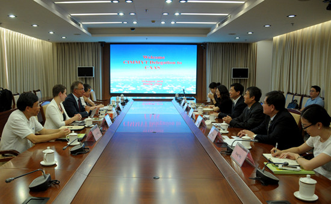

李家洋分别会见国际玉米小麦改良中心主任和国际水稻研究所所长
8月15-16日，农业部副部长、中国农业科学院院长李家洋分别会见了来华参加“第七届国际作物科学大会”的国际玉米小麦改良中心（CIMMTY）主任马丁•克罗波夫（Martin Kropff）一行和国际水稻研究所（IRRI）所长马修•莫雷尔（Matthew Morell）一行，就继续推进双方今后在相关领域的合作进行了深入交流。期间，同IRRI签署了“中国农业科学院与国际水稻研究所水稻基因组学和种质改良领域合作谅解备忘录”。副院长吴孔明参加了会见。
 在会见马修•莫雷尔时，李家洋指出，同IRRI的合作是中国在农业科技领域国际合作的成功范例。过去40年来，双方在水稻种质资源交换、生物技术、人才培养等领域取得了显著成绩，在国内外产生了较大影响。当前，在全球气候变化对水稻生产造成潜在威胁的大背景下，利用基因组学研究促进种质改良对应对全球粮食安全挑战意义重大。双方此前对进一步加强该领域的合作已达成多项共识，本次谅解备忘录的签署进一步规范了双方在优良品种选育、先进育种方法等方面的合作导向。希望双方在该谅解备忘录框架下通力合作，共同应对气候变化带来的挑战，促进全球水稻主产国的粮食安全。莫雷尔赞同李家洋的建议，他表示，水稻是全球最重要的粮食作物之一，IRRI作为全球最大的水稻科研领域国际机构，有责任和义务促进和保障全球的水稻生产和供给，希望同中国加强在发掘先进水稻抗性、基因组进化、提高水稻光合作用等领域的合作，共同促进全球水稻品质和产量的提升。
在会见马修•莫雷尔时，李家洋指出，同IRRI的合作是中国在农业科技领域国际合作的成功范例。过去40年来，双方在水稻种质资源交换、生物技术、人才培养等领域取得了显著成绩，在国内外产生了较大影响。当前，在全球气候变化对水稻生产造成潜在威胁的大背景下，利用基因组学研究促进种质改良对应对全球粮食安全挑战意义重大。双方此前对进一步加强该领域的合作已达成多项共识，本次谅解备忘录的签署进一步规范了双方在优良品种选育、先进育种方法等方面的合作导向。希望双方在该谅解备忘录框架下通力合作，共同应对气候变化带来的挑战，促进全球水稻主产国的粮食安全。莫雷尔赞同李家洋的建议，他表示，水稻是全球最重要的粮食作物之一，IRRI作为全球最大的水稻科研领域国际机构，有责任和义务促进和保障全球的水稻生产和供给，希望同中国加强在发掘先进水稻抗性、基因组进化、提高水稻光合作用等领域的合作，共同促进全球水稻品质和产量的提升。

在会见马丁•克罗波夫时，李家洋高度评价了双方过往的合作成就。他指出，自上世纪70年代双方建立合作关系以来，在玉米小麦种质资源交换、新品种选育、能力建设等方面取得了显著成绩，在促进中国玉米小麦种质资源改良等方面起到了积极作用。希望双方今后共同推进“农业部-CIMMYT联合实验室”建设，继续拓展合作的广度和深度，同时结合CIMMYT在非洲的科研网络，大力推进与非洲国家在种质资源交换与改良领域的合作，为非洲以及其他发展中国家粮食安全作出应有贡献。克罗波夫赞同李家洋的建议，他表示将就“CIMMYT-农业部联合实验室”筹建一事进行深入研究，并拿出切实可行的方案；同时，邀请中国农科院深入参与CIMMYT在非洲的工作，共同促进非洲在玉米等主要粮食作物领域的研究和推广。